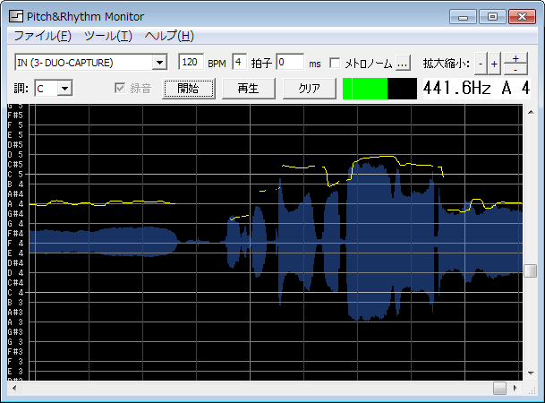

音階＆リズム測定ソフト Pitch&Rhythm Monitor（prmonitor）
最終更新日：2012/6/25
パソコンのマイクから入力した音声の音階とリズムをリアルタイムに表示するソフトです。ボーカルのトレーニングなどに使用できます。

特徴
- パソコンのマイク入力からリアルタイムに測定可能
- 測定結果を後からスクロールして確認できる
- リズムの確認にBPM、拍子を設定可能
- A1～B9の音階が測定可能
- 測定した音声の録音／再生が可能
- テンポの自動解析が可能
- 音声の保存／読み込みが可能
- メトロノーム機能
動作環境
※Windows Vista以前では動作しません。
※Windows Vista以前をお使いの方は旧バージョン(ver1)をダウンロードしてご使用ください。
ダウンロード
最新バージョン
以前のバージョン
インストール／アンインストール方法
【インストール方法】
ダウンロードした圧縮ファイルを任意のインストールしたいフォルダに解凍してください。
【アンインストール方法】
インストールしたフォルダをフォルダごと削除してください。
使い方
【起動方法】
インストールしたフォルダから「prmonitor.exe」を実行してください。
【入力デバイスの選択】
[入力デバイス]コンボボックスからマイクが接続されているデバイス名を選択してください。
どれが入力デバイスかわからない場合は、適当に選んで[開始]ボタン押してを一つ一つ試してください。
なお、デバイス名の末尾に「(Direct Sound)」が付くものと、「(WDM)」が付くものが表示されますが、「(Direct Sound)」が付くものはレイテンシーが大きくなりますが、他のソフトとデバイスを共有できます。「(WDM)」が付くものは、レイテンシーが小さいですが、他のソフトでデバイスを使用中の場合使用できません。また、本ソフトで使用中は他のソフトでデバイスを使用できません。特に、問題がなければ、「(Direct Sound)」を選択してください。
【測定開始】
[開始]ボタンを押してください。マイクから音声を入力すると、リアルタイムに音階が表示されます。
【マイク入力レベル設定】
測定開始後に、[クリア]ボタンの隣の欄に、マイクから入力した音声の音量が緑の矩形で表示されます。音量が黄色の縦線より右側の場合に、音階の測定が行われます。欄内でマウスをクリックすることで、黄色の縦線の位置を変更できます。また、パソコンの機種や設定によってはマイクから入力される音量が小さすぎる場合があります。コントロールパネルのサウンドからマイクブーストの設定を行ってください。
【測定終了】
[停止]ボタンを押してください。測定終了後は、スクロールバーを操作することで、測定結果をスクロールして確認できます。
【測定結果のクリア】
[クリア]ボタンを押してください。なお、クリアするまでの約10分（デバイスにより前後する）のデータを測定できます。約10分を超えたデータは上書きされます。
【BPM、拍子の設定】
[BMP]欄と[拍]欄に数値を入力することで、BPMと拍子を設定できます。[ms]欄に数値を入力すると1泊目の開始位置を微調整できます。
【テンポの自動解析】
メニューから[ツール]→[テンポ解析]を選択してください。
テンポを自動解析した結果が可能性が高い順から5つ表示されます。
適用するテンポを選択して[OK]を押してください。
[BMP]欄と[ms]欄に値が反映されます。
【調(キー)の設定】
[調]コンボボックスから調(キー)を選択します。
＜録音／再生機能＞
【録音】
録音チェックボックスにチェックを入れて測定を行うと、測定した音声を録音できます。
※録音をチェックして測定を行った場合、クリアボタンを押すまで録音を解除できません。
【再生】
録音後、再生ボタンを押すと録音した音声を再生しながら音階を確認できます。
【再生位置変更】
音階の表示領域でマウスクリックすることで再生位置を変更できます。
再生位置は緑色の縦線で表示されます。
＜保存／読み込み機能＞
【保存】
録音した音声を保存するには、メニューから[ファイル]→[音声を保存]を選択してください。
保存される音声ファイルの形式は、.wav(44100Hz、16bit、モノラル)です。
【読み込み】
保存した音声を読み込むには、メニューから[ファイル]→[音声を開く]を選択してください。
読み込み可能な音声ファイルの形式は、.wav、.mp3などWindows Media Playerで再生可能な形式です。
読み込む際に、44100Hz、16bit、モノラルに変換されます。
読み込みと同時にピッチの解析を行うため、パソコンの性能によっては読み込みに非常に時間がかかる場合があります。
読み込み時間は音声ファイルの長さ比例します。
著作権/免責/注意事項
本ソフトウェアはフリーソフトですので、無料で使用できます。なお、著作権は作者に帰属します。
雑誌・ホームページ等への掲載、再配布時の連絡は不要です。
また、本ソフトウェアは使用した結果については、作者は一切責任を負えないためご了承ください。
サポート/連絡先
意見・要望・感想・バグ報告は掲示板で承ります。
参考
本ソフトを作ろうとしたは、「ピッチ検出ソフト Pitch Monitor」で、使っているとデバイス初期化に失敗する場合があったのと、リズムも確認できたらなあと思ったのがきっかけです。ver 1では解析精度を何度か改良しましたが、そこそこ安定した精度で解析できるようになりました。ただし、使用しているマイクによっては誤検知が多くなる場合もあります。そのうちマイクキャリブレーションを行えるようにしたいと思います。ver 2.00からは、メトロノーム機能とテンポ自動解析機能を追加して、リズムの確認を強化しました。また、音声の読み込みにも対応したので、使い方によっては音声を抽出したファイルを使用してメロディーの採譜を行うこともできます。個人が趣味で作成しているソフトですのでバグは多いと思いますが、掲示板に報告いただければ極力対応したいと思います。
紹介記事など
以下の記事でご紹介いただきました。ありがとうございます。
更新履歴
ver 2.01 2013/6/15
- 開始後クリアボタン押下で異常終了するバグを修正
- 10分経過で異常終了するバグを修正
- マイクがステレオの場合L、Rどちらでも使用できるようにした。
- サンプリング周波数をデバイスの設定から取得するようにした。
ver 2.00 2012/3/19
- メトロノーム機能を追加
- ピッチ表示領域を拡大縮小する機能を追加
- 調を設定する機能を可能
- 振幅データをバックグラウンドに表示するようにした。
- 録音した音声の保存／読み込み機能を追加
- テンポの自動解析機能を追加
- サンプリング周波数を8000Hzから44100Hzに変更
- サンプリング周波数変更に伴い測定可能な音域をA1～B9に広げた。
- 録音再生のAPIを変更(DirectShowからWASAPIに変更)
ver 1.05 2010/5/8
- 測定可能な音域をA1～B6に広げた。
- 測定中のピッチが表示範囲を超えた場合の自動スクロールを滑らかにした。
ver 1.04 2010/5/7
- 入力デバイスの数が多い場合スクロールバーを表示するように修正
ver 1.03 2010/5/5
- 解析方法を変更して精度を向上させた。（自己相関関数のピークの間隔から推定）
- スペクトラム表示機能を正式版に取り込んだ。
- ダンプ取得機能を追加
- マウスホイールに対応
ver 1.02 2010/1/19
ver 1.01 2009/12/12
- 録音／再生機能を追加
- ウィンドウサイズを変更できるようにした。
ver 1.00 2009/12/1 初公開
トップページへ